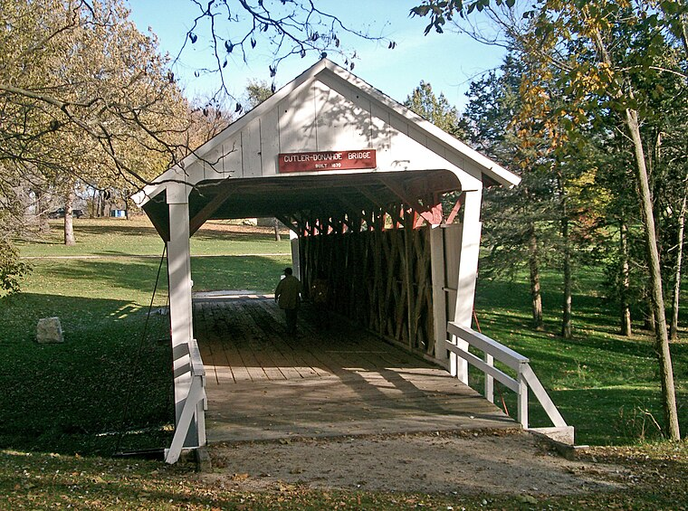
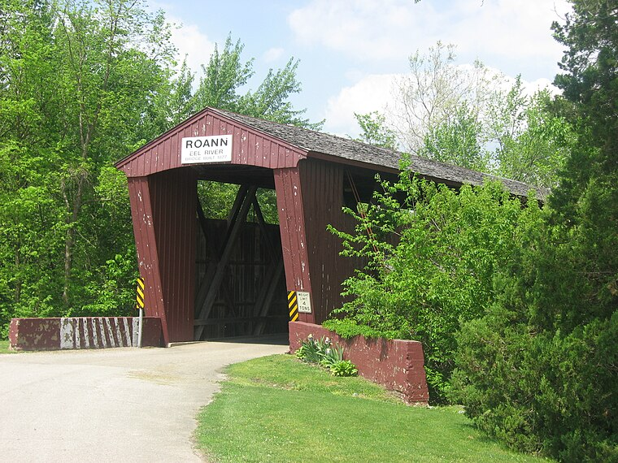
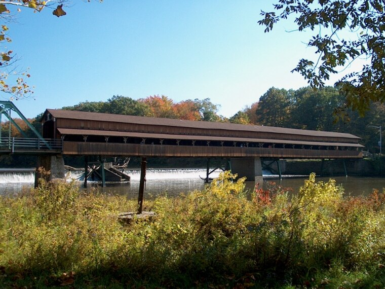
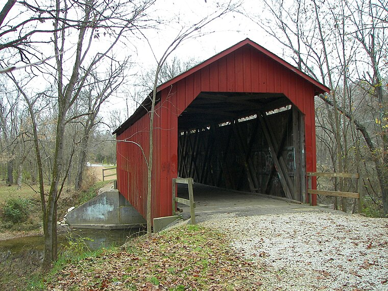

The Heartland Bridge Registry
Since 1991, HCBA volunteers have maintained a registry of every surviving historic covered bridge in our fourteen-state region — currently 152 bridges. Each registry entry includes the bridge's truss type, build date, builder (where known), dimensions, condition notes from our most recent site visit, and a photographic record.
The full registry is maintained as a card file and spreadsheet at our Winterset office and is available to researchers by appointment. A long-overdue digitization project is underway this summer. Below is a small sampling of registry entries.
Featured Registry Entries

Hogback Creek Bridge
The bridge that started it all. Saved from demolition by our founding fund drive in 1989, re-roofed in 1990 and again in 2014, and re-decked this spring with help from Madison County Secondary Roads. Open to foot traffic only. Reopening ceremony August 8, 2026.

Cutler–Donahoe Bridge
Moved to Winterset City Park in 1970, where it now shelters more wedding photographs per year than any other structure in the county. In fair-to-good condition; siding on the northwest corner is due for attention.

Roann Bridge
One of the longest surviving spans in our registry and still open to single-lane vehicle traffic. The Friends of the Roann Bridge received an HCBA micro-grant in May 2026 for interpretive signage at both portals.

Harpersfield Bridge
Spans the Grand River in a county that proudly calls itself the covered bridge capital of Ohio (we stay neutral on such claims). A steel addition was attached after the 1913 flood shifted the river channel — history you can see in one glance.

Sandy Creek Bridge
Rebuilt in 1886 after a flood took the original, and restored by the state in 1984. A reliable favorite on our fall driving tour; the maples along Sandy Creek do half the work.
Registry by State
| State | Bridges | State | Bridges |
|---|---|---|---|
| Ohio | 58 | Iowa | 8 |
| Indiana | 52 | Michigan | 5 |
| Illinois | 9 | Missouri | 4 |
| Wisconsin | 8 | Other (7 states) | 8 |
Counts reflect bridges meeting HCBA registry criteria (pre-1946 construction, authentic truss) as of June 2026.